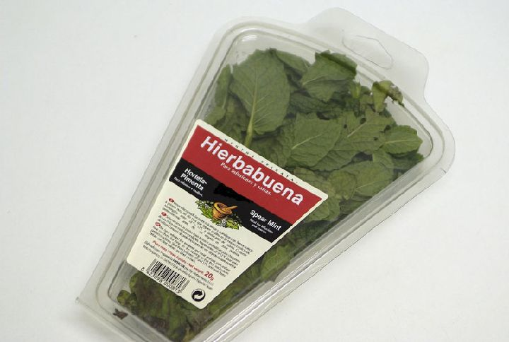

La hierbabuena, yerbabuena o menta verde es una hierba perenne de aroma fresco e intenso, perteneciente a la familia de las Lamiaceae. Su nombre botánico es Mentha spicata, haciendo referencia a la forma de sus hojas (en latín spica corresponde a lanza) o al término espigado, aludiendo a la fisonomía de sus flores. Procede de la hibridación de dos tipos de menta, la menta negra de color violáceo y la menta blanca con tonos verdes uniformes.
Esta planta puede alcanzar el metro de altura, aunque generalmente su porte está entre 30-90 cm, de hojas lanceoladas, con aroma intenso, serradas, glabras y pilosas en su envés. Las flores nacen de espigas en el extremo más alto, muestran un cáliz de cinco sépalos, la corola tiene tonos alilados, rosas o blancos de hasta 3 m de longitud.
Cultivo y recolección
Se puede encontrar en climas templados, resultando beneficiada de ubicaciones a media sombra, aunque puede tolerar largas horas al sol. Los terrenos en los que se desarrolla con mayor facilidad suelen ser arcillosos, debido a que posee raíces extensas e invasivas. Su necesidad de abundante agua y buen drenaje hace que en la Región de Murcia su cultivo se concentre en zonas de barrancos, ramblas y en las riberas de algunos ríos, donde los suelos son frescos y húmedos, pudiéndose encontrar además de forma salvaje o espontánea.
Su cultivo también se realiza en maceta, a menor escala, ya que en poco tiempo produce un gran espesor y tallos robustos, por lo que aromatiza el interior de las casas y además se puede hacer uso de las hojas para elaboraciones culinarias.
Usos
La frescura e intensidad que proporcionan las hojas y tallos de hierbabuena fresca ha definido uno de sus usos más característicos a través de los siglos, el de perfume, ambientador o aromatizante en hogares de todo el mundo.
 Hierbabuena comercializada en fresco.El aceite esencial de esta hierba, compuesto principalmente por mentol, está presente en productos relacionados con la higiene dental como dentífricos y colutorios (líquidos de enjuague bucal), utilizándose también en inhalaciones o pomadas contra la gripe.
Los usos medicinales de la hierbabuena se asemejan al resto de especies de menta. Entre las propiedades más significativas se encuentran numerosos beneficios para el aparato digestivo como la ayuda para expulsar gases o facilitar las digestiones. El aparato respiratorio también se puede ver beneficiado por la ingesta de hierbabuena en distintas recetas por su componente en mentol. De esta forma se aprovecha en tratamientos de bronquitis, gripe y resfriados, para rebajar la fiebre por evaporación del calor corporal o como buen expectorante (Se recomienda diluir dos cucharadas de hojas secas o el doble de hojas tiernas en un litro de agua, tomando dos tazas al día).